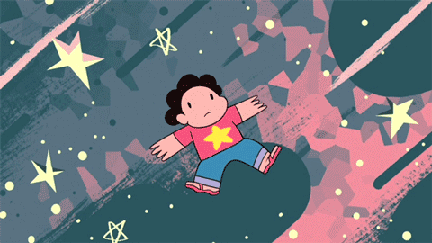
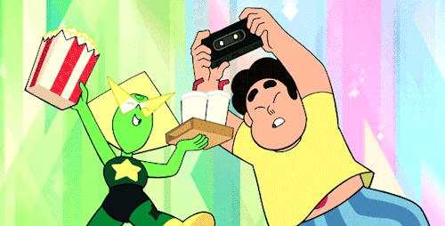
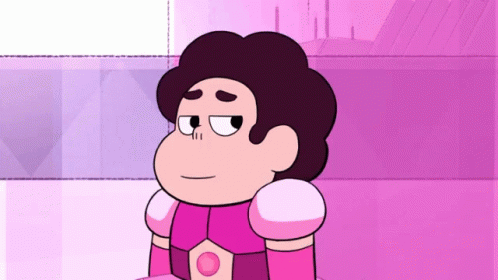
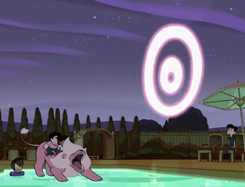
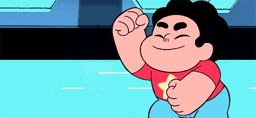

CURIOSIDADES SOBRE A SÉRIE
1º
Antes de criar Steven Universo,
Rebecca
trabalhava em Hora De Aventura.
2º
O Steven foi inspirado no irmão da Rebecca, Steven Sugar.
3º
Os estilos de luta das Crystal Gems são baseados em diferentes estilos de dança.
4º
O personagem favorito da Rebecca é o Greg.
5º
Até hoje, nenhum personagem inteiramente gem teve orelhas.
6º
Rose precisou mudar de forma para dar à luz o Steven.
7º
Rebecca é bissexual.
8º
A Pérola foi a personagem que mais falou "Steven" em toda a série.
9º
10º
O signo do Steven é "Leão".
11º
A Peridot tem uma conta oficial do Twitter.
12º
A Rubi foi a gem que mais ficou sem pedra devido a erros de desenhistas.
13º
O biscoito gatinho existe na vida real, mas como sorvete. A Rebecca adora ele.
14º
O Leão foi inspirado no gato da Rebecca, chamado "Leão".
15º
Gems não têm sexo, afinal, são pedras. Isso foi dito pela Rebecca.
⇧ Ir para cima ⇧
- 
- 
- 
- 

- 